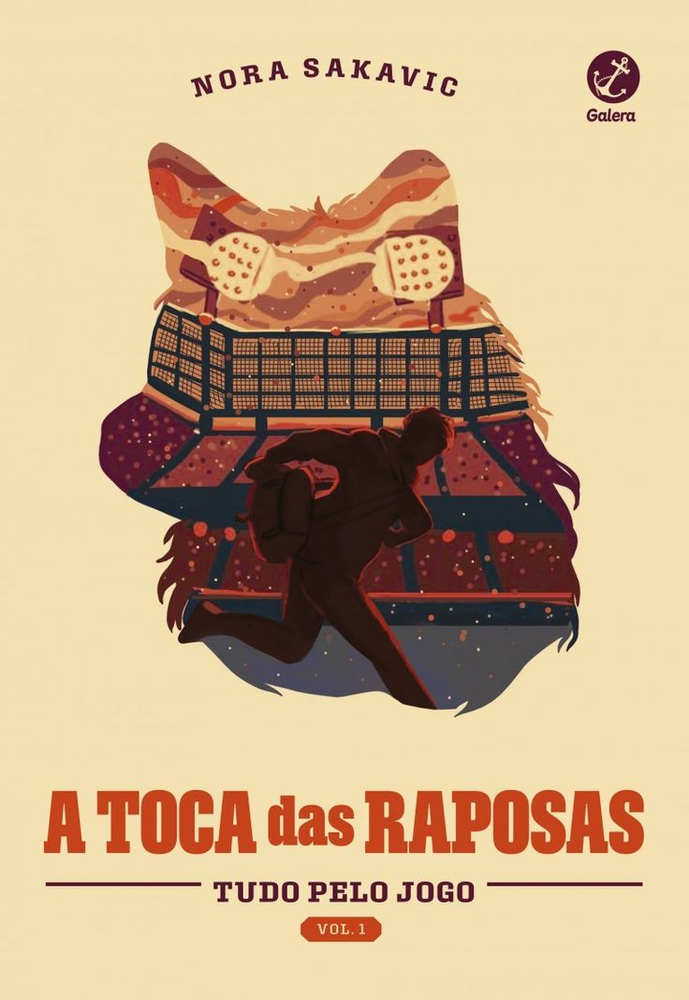
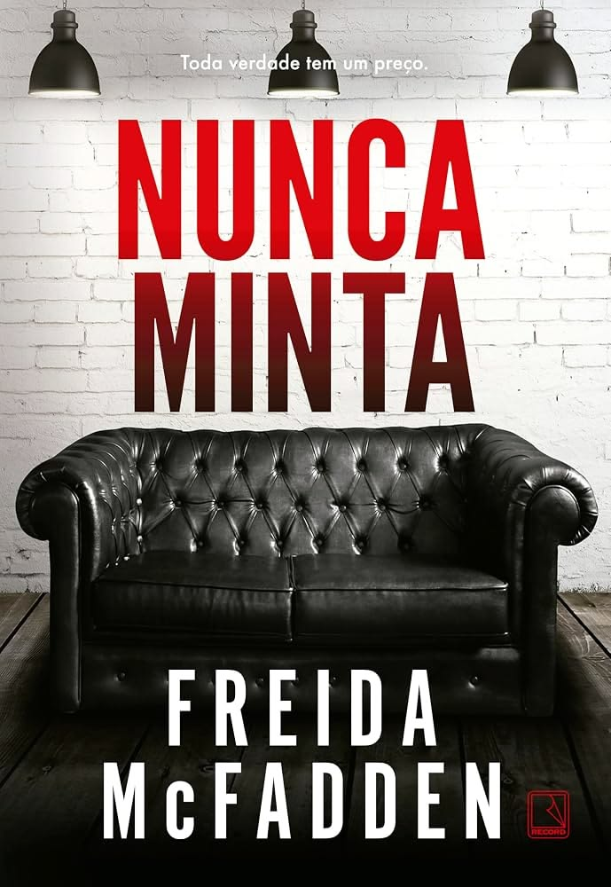

Um universo entre páginas
Livros nos dão um lugar para ir quando precisamos permanecer onde estamos.
Encontre histórias que combinam com você e descubra sua próxima história favorita. Existe um mundo inteiro esperando entre páginas.
Criar um perfil“Ler é viajar sem sair do lugar”
Encontre sua próxima leitura aqui
Favoritos que talvez te encantem


Uma espiadinha na história
Cada leitor é único
Qual história está esperando por você?
Conte um pouco sobre seus gostos literários.